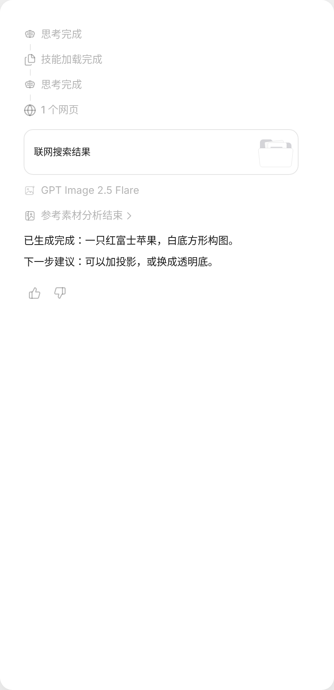
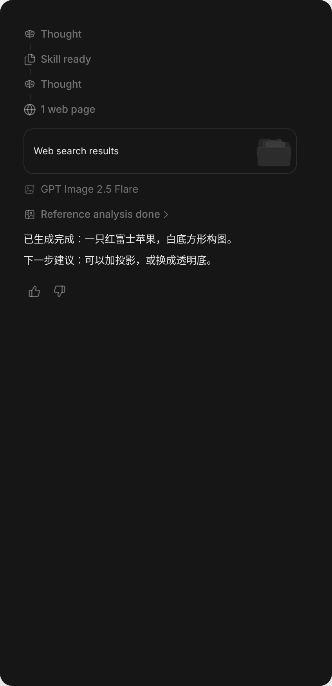
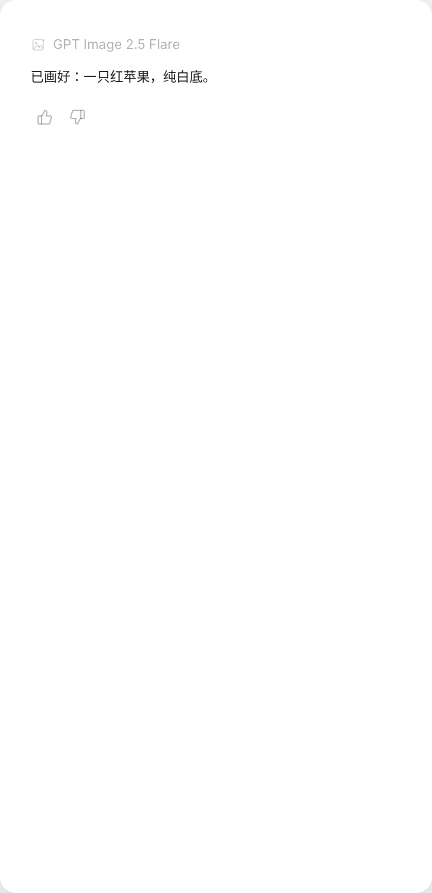
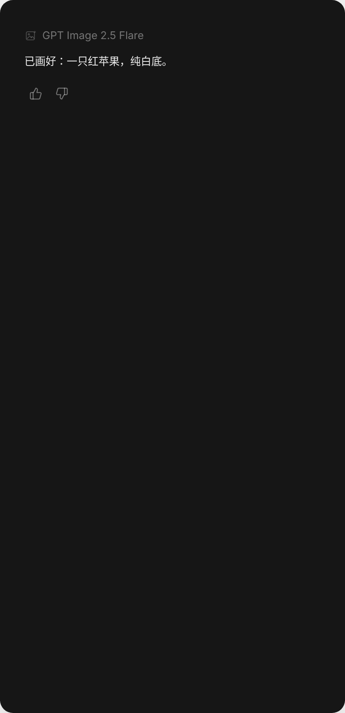
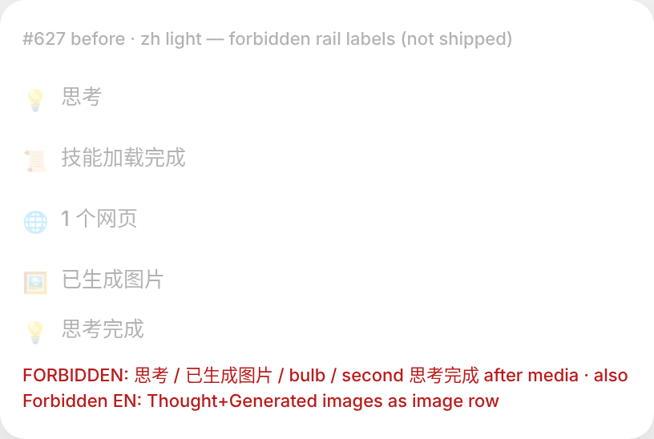

| Row | CN live (gold) | This tip AFTER | FORBIDDEN |
|---|---|---|---|
| Think done | 思考完成 | 思考完成 / Thought | 思考 · Thought+Generated images combo as image |
| Skill | 技能加载完成 · stacked docs | 技能加载完成 · Icons.files | — |
| Web | N 个网页 · globe(+favicon) | N 个网页 (already live) | — |
| Image / media | runtime model (e.g. Flare / 2.5 Sunburst / GPT Image 2) | opts.model slot | 已生成图片 · Generated images · 图片模型 |
| Post-image | 参考素材分析结束 | ref_analysis remap when sawMediaGen | second 思考完成 |
| End | prose + 👍/👎 | DoneFeedback | — |
| Video | Seedance 2.0 视频生成 / GIF 生成完成 (optional) | Out-of-scope-or-optional — same model slot if payload; not invented | invented video copy |
| Music / PPT | — | OUT this tip | invented Music/PPT rail copy |